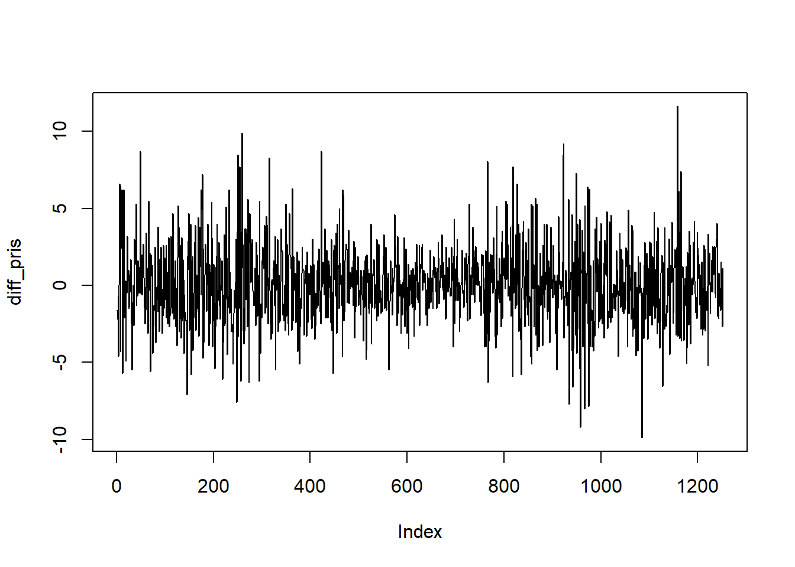
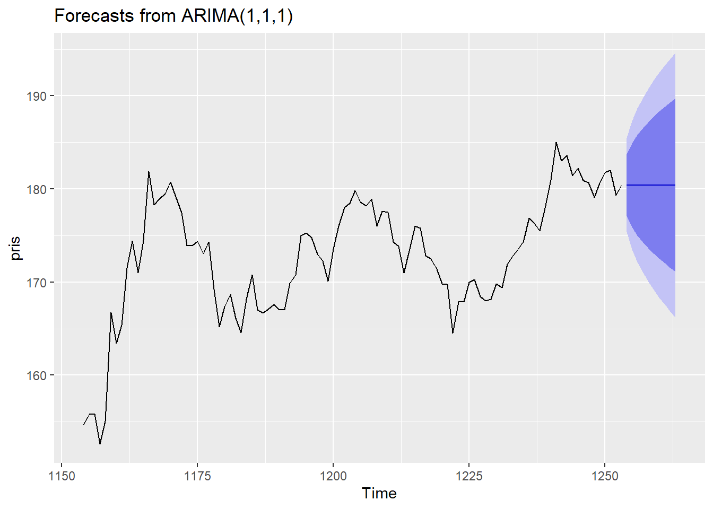

7 ARMA og ARIMA
7.1 Kontrollspørsmål/Diskusjonsspørsmål
- Hva er sammenhengen mellom AR-, MA-, og ARMA-modellene?
- Hva er en ARIMA-modell?
- Hvilken modell er dette: \[y_t = \phi_1 y_{t-1} + \phi_2 y_{t-2} + \theta u_{t-1} + u_t\]
7.2 R-øving
1. Data
Vi tar en ny titt på den daglige prisen på Eqinoraksjen over en 5-års periode som vi så på i introduksjonen til tidsrekker. Vi laster inn datasettet som før ved hjelp av readxl-pakken, og henter ut den aktuelle kolonnen. Legg merke til at vi bruker rev()-funksjonen til å reversere rekkefølgen til observasjonene slik at den første verdien komme først:
library(readxl)
equinor <- read_excel("equinor.xlsx")
pris <- rev(equinor$Siste)
plot(pris, type = "l")
Vi kan lage en figur av den differensierte tidsrekken på følgende måte:

Oppgave: Vurder om en ARIMA modell er bedre egnet enn en ARMA modell ut fra de to figurene over.
2. Estimering av ARIMA modeller
Vi bruker den samme funksjonen Arima fra forecast pakken til å estimere både ARMA og ARIMA modeller og spesifisering av modellen gjør vi via argumentet order. Skal du estimerer en ARMA(1,1) modell setter du f.eks dette argumentet til c(1, 0, 1). Elementet i midten av denne vektoren spesifiserer hvor mange ganger tidsrekken skal differensieres i ARIMA modellen. Estimering av en ARIMA modell med en enkelt differensiering og ett MA og AR ledd kan gjøres slik:
3. Hvordan skal vi velge p, d og q i en ARIMA(p,d,q) modell? Etter å ha tilpasset en ARIMA modell kan vi bruke modellen til å predikere de samme observasjonene vi har brukt til å tilpasse modellen. Vi kan så sammenligne hvor nær prediksjoner fra forskjellige modeller er de sanne dataene. Dette heter på godt norsk å gjøre en “in-sample” vurdering av modellen.
Når du har tilpasset en modell, kan du ved å bruke summary funksjonen få opp flere mål på hvor god modellen er in-sample under fanen “Training set error measure”:
## Series: pris
## ARIMA(1,1,1)
##
## Coefficients:
## ar1 ma1
## 0.5121 -0.5780
## s.e. 0.1680 0.1584
##
## sigma^2 estimated as 6.614: log likelihood=-2958.16
## AIC=5922.32 AICc=5922.34 BIC=5937.72
##
## Training set error measures:
## ME RMSE MAE MPE MAPE MASE
## Training set 0.03973471 2.568719 1.949446 0.009091475 1.251353 0.9955157
## ACF1
## Training set 0.02035596Her er f.eks \(RMSE = \sqrt{1/T\sum_{t = 1}^T (\hat{y}_t - y_t)^2}\) et slags gjennomsnittlig avvik mellom prediksjonene og observasjonene. Litt lenger oppe i summary utskriften er det også en størrelse som heter AIC som måler hvor sannsynlig hver observasjon er gitt modelvalget ditt. Sammenligner du flere modeller er du på jakt etter den modellen som har minst RMSE og/eller AIC.
Det krever en del arbeid skal du sammenligne mange ARIMA(p,d,q) modeller ettersom det er så mange måter å kombinere p,d og q på selv om du bestemmer en maksverdi for hver av dem. Det finnes heldigvis en veldig smart R funksjon kalt auto.arima som følger med pakken forecast som estimerer mange modeller og gir deg ut den modellen med minst AIC:
## Series: pris
## ARIMA(0,1,2)
##
## Coefficients:
## ma1 ma2
## -0.0421 -0.0947
## s.e. 0.0282 0.0281
##
## sigma^2 estimated as 6.581: log likelihood=-2955.04
## AIC=5916.09 AICc=5916.1 BIC=5931.48
##
## Training set error measures:
## ME RMSE MAE MPE MAPE MASE
## Training set 0.0398931 2.56232 1.948444 0.009249629 1.249956 0.9950042
## ACF1
## Training set -0.001297121Hva slags modell har auto.arima valgt her?
4. Prediksjon
Prediksjon gjøres som tidligere med forecast funksjonen, så hvis en vil predikere 10 tidssteg frem i tid gjør man følgende:

merk at i autoplot har vi valgt å bare vise 100 observasjoner av tidsrekken sammen med prediksjonene